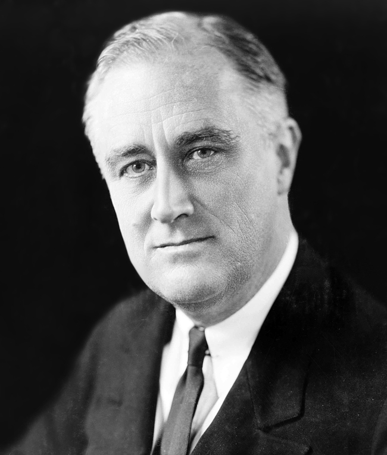

 Franklinas Delanas Ruzveltas gimė 1882 m. sausio 30 d. geležinkelių magnato Džeimso Ruzvelto šeimoje. Jis lankė Harvadą ir Kolumbijos universiteto teisės mokyklą, bet nenorėjo tapti advokatu. 1905 m. vedė Eleonorą Ruzvelt, savo tolimąją pusseserę. 1910 m. jis buvo išrinktas į Niujorko valstijos legislatūrą.1913 m. buvo paskirtas jūrų laivyno ministro pavaduotoju. 1921 m. rugpjūčio 25 d. jam buvo diagnozuotas vaikiškas paralyžius, poliomelitas. Vaikščioti F. D. Ruzveltas daugiau negalėjo ir visą likusį gyvenimą praleido su ortopediniais įtaisais ant kojų, ramentais ir invalido vėžimėlyje. Tai atrodė kaip jo karjeros pabaiga, bet dėl savo žmonos paramos, kuri pavaduodavo jį politiniuose susitikimuose, jis sugrįžo į darbą. 1928 m. Franklinas tapo Niujorko valstijos gubernatoriumi, o 1930 m. vėl buvo perrinktas. 1932 m. iškėlęs savo kandidatūrą į prezidento postą, F. D. Ruzveltas paskelbė „Naująjį kursą“ („New Deal“), kurį tapęs prezidentu 1932 m., 1933 m. ėmėsi įgyvendinti. 1936 ir 1940 m. jis buvo perrinktas į prezidentus.